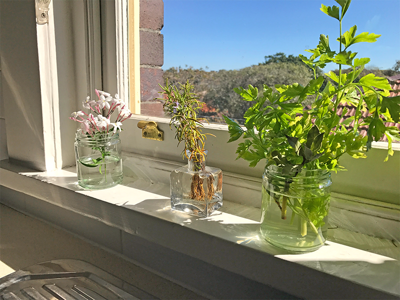

Home
Food Hacks
Recipes
Favourite Produce
About
Contact
Coffee Fertiliser
This a good way to dispose of used coffee grounds and also give a boost to plants.
Grow Your Own
This a neat trick a friend taught me. You can grow your ginger some you buy from the store.

Keep Fresh Food Fresh
Here are some tricks for keeping different types of produce fresher for longer.
How to Butterfly a Chicken
Butterflying a chicken for marinating needn't be so daunting.